01｜對話起點：從 11 本 AI 書開始
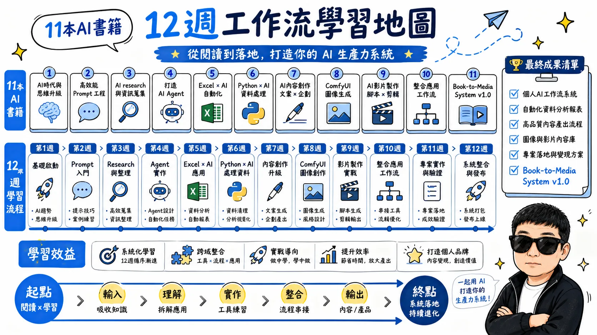

專案總覽：從 11 本書走向一套 AI 生產系統
對話發展脈絡
這次對話最後形成的核心觀念
不是「讀完 11 本書」，而是「11 本書 → 抽出方法 → 去除重複 → 整合 SOP → 做成 Prompt → 再做成 Agent」。
02｜11 本書：出版資訊與主要內容
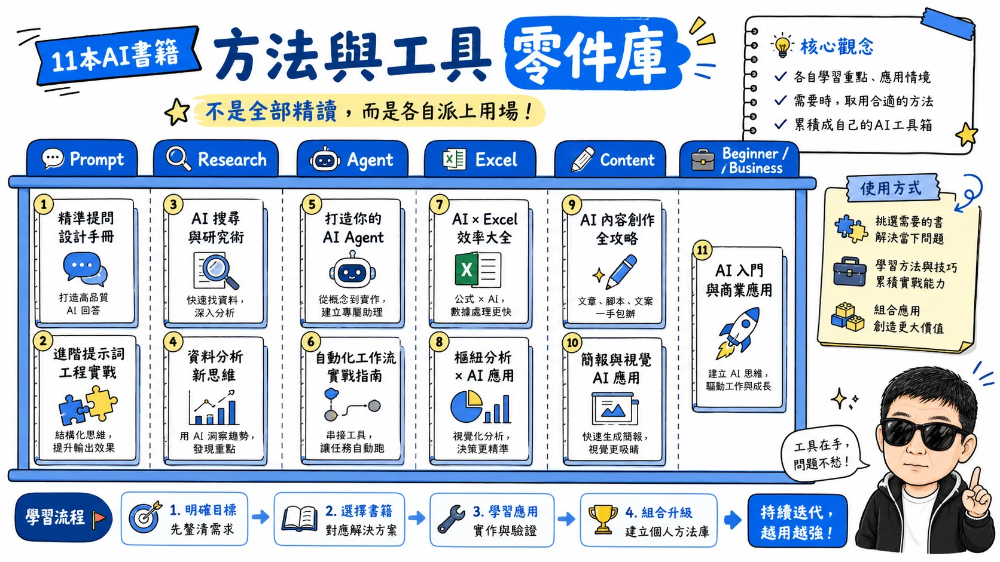
11 本 AI 書籍：五大能力群
11 本書快速分類
以下保留本次對話中整理出的書單。部分獨立出版書籍公開書目資料有限，因此精確日期未完全確認。
| # | 書名 | 出版資訊 | 主要內容 |
|---|---|---|---|
| 1 | 1000 ChatGPT Prompts for Business Owners Mardouli Mustapha |
2026；精確日期未確認 | 企業主與創業者 Prompt 大全：商業規劃、行銷、銷售、客服、內容與生產力。 |
| 2 | The Ultimate ChatGPT Prompt Book Elijah Moonsamy |
2026；精確日期未確認 | 1,000+ Prompt，涵蓋生產力、行銷、寫作、商業成長與內容創作。 |
| 3 | How to Use ChatGPT for Research and Fact Checking Taylor Brooks |
2026-02-03 | 研究問題拆解、來源評估、交叉驗證、衝突資訊、降低 AI 幻覺與可重複查證流程。 |
| 4 | How to Make Money with ChatGPT Elijah Moonsamy |
2026；精確日期未確認 | AI 副業、內容策略、數位產品、自由工作、行銷與商業系統。 |
| 5 | ChatGPT Agents for Beginners Taylor Brooks |
2026 | No-code Agent：目標拆解、任務序列、輸出、測試修正、研究助手、規劃與批次工作。 |
| 6 | The Ultimate AI Prompt Collection V1_Master Ismaiel Mahmoud |
2026；正式書目不足 | 大型 AI Prompt 範本資料庫，偏查詢與套用。 |
| 7 | The Patient Guide to AI for Seniors Nova Impact |
2026-06-10 前後（版本可能不同） | 銀髮與 AI 初學者：ChatGPT、Gemini、Claude、日常應用、防詐、隱私與錯誤辨識。 |
| 8 | Learning Generative AI Tools for Excel Angelica Lo Duca |
2026-05-19；線上版資料另標 2026-04 | Excel＋ChatGPT＋Copilot＋生成式 AI；資料處理、分析、視覺化、Macro/VBA、Python。 |
| 9 | The Ultimate ChatGPT Prompt Book Igor Pogany |
2026-01-13 | 750+ Prompts、100+ Cheat Sheets、Prompt Formula；工作、研究、學習、創意與生活。 |
| 10 | Life Hacks for ChatGPT Beginners Stanley Lieber |
2026-05-12（美國版） | 501 個生活 Prompt：家庭、旅行、購物、工作、親子、興趣等。 |
| 11 | AI Content Creation with ChatGPT Elijah Moonsamy |
2026；精確日期未確認 | 內容企劃、文章、社群、腳本、行銷與批次內容生產工作流。 |
03｜閱讀策略：精讀、選讀、工具書
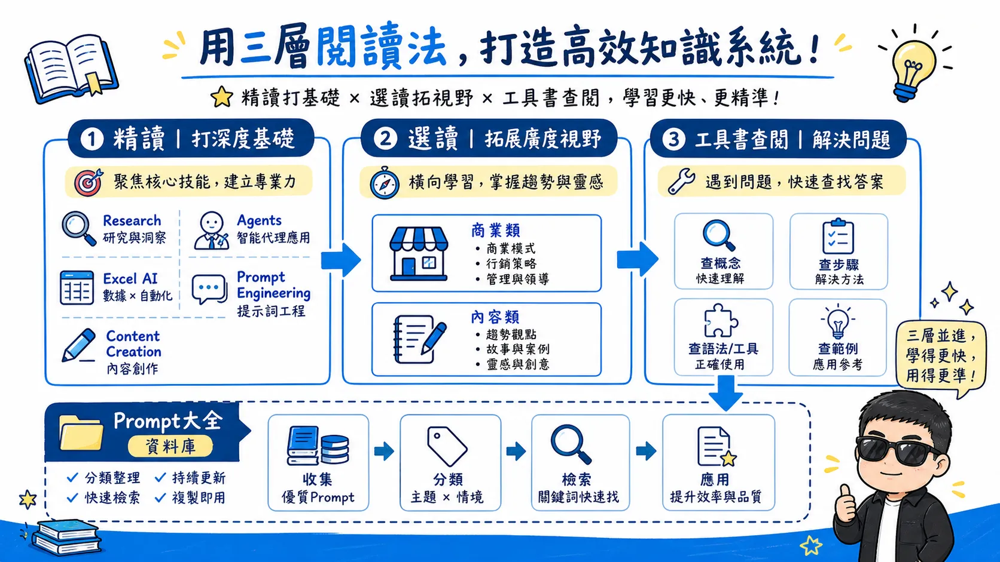
閱讀策略：精讀 5 本，其餘當資料庫
三層閱讀策略
🔴 精讀核心
#3 Research & Fact Checking
#5 ChatGPT Agents
#8 Generative AI for
Excel
#9 Prompt Book — Pogany
形成研究、Agent、資料處理與 Prompt 四項基礎能力。
🟡 選章閱讀
#2 Prompt Book — Moonsamy
#4 Make Money with ChatGPT
#11 AI Content
Creation
挑與 Workflow、影片腳本、內容自動化有關的章節。
⚪ 當資料庫
#1、#6、#7、#10
遇到需求再查；不需要逐頁從頭讀完。
能力鏈
04｜11 本之間的重複內容
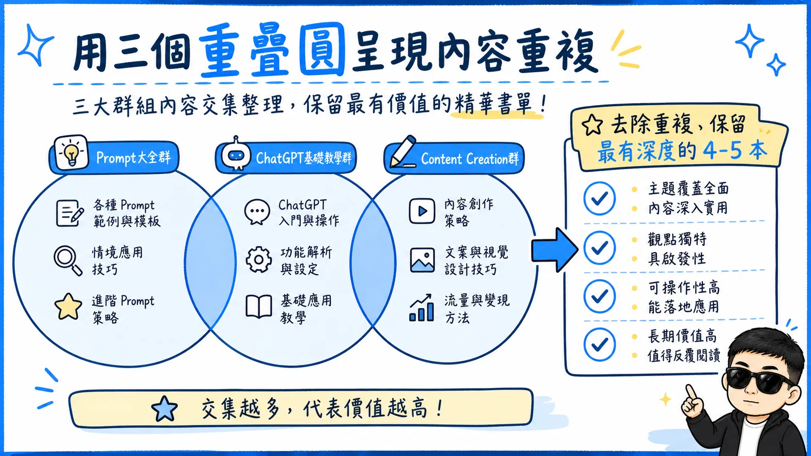
去除重複：把 11 本濃縮成 5 種知識模組
重複內容怎麼處理
Prompt 大全高度重疊
#1、#2、#6、#9、#10 大量涵蓋 Prompt 範例、寫作、生產力、行銷、研究、生活、工作、學習與創意。策略：不要五本都從頭讀，整併成自己的 Prompt Reference Library。
ChatGPT 基礎教學重疊
#7、#10、#2、#9 都包含「什麼是 ChatGPT、如何開始、怎麼問、AI 會犯錯、隱私」等。以目前學習深度可快速略讀；但防詐、隱私與 AI 錯誤辨識仍值得看。
Content Creation 重疊
#11、#4、#2 都涉及社群、行銷、Blog、Copywriting、Automation、Scaling。保留 #11 作為主要內容工作流教材，其餘交叉查閱。
05｜最值得精讀的章節
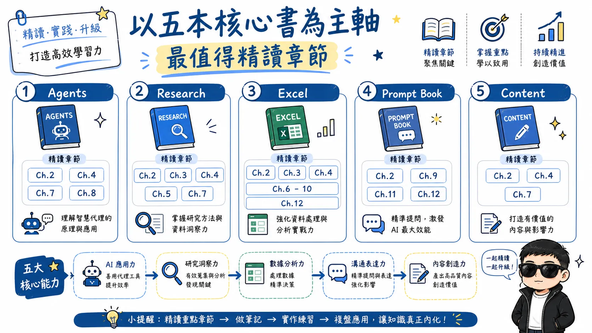
必讀章節：只抓能轉成工具的內容
必讀章節能力圖
| 書籍 | 章節 | 要帶走的能力 |
|---|---|---|
| ChatGPT Agents for Beginners | Ch.2 Goals, Tasks, Outputs Ch.4 Content Research Assistant Ch.5 Planning & Task Batching Ch.7 Testing, Refining, Scaling Ch.8 Templates |
任務拆解、Agent 實作、批次處理、測試除錯與可重複模板。 |
| Research & Fact Checking | Ch.2–5、Ch.7 | 研究要求、Prompt Patterns、來源可信度、衝突資訊、研究 SOP。 |
| Generative AI Tools for Excel | Ch.2–4、Ch.6–10、Ch.12 | ChatGPT＋Excel、進階資料操作、Copilot、Python＋Excel＋AI。 |
| Prompt Book — Moonsamy | Ch.2、Ch.9、Ch.11、Ch.12 | 好 Prompt 的結構、研究、進階 Prompt、Personal AI Operating System。 |
| AI Content Creation | Ch.2、Ch.4、Ch.7 | Content Workflow、YouTube/Video Scripts、Automation & Scaling。 |
06｜四個最重要的實作工作流
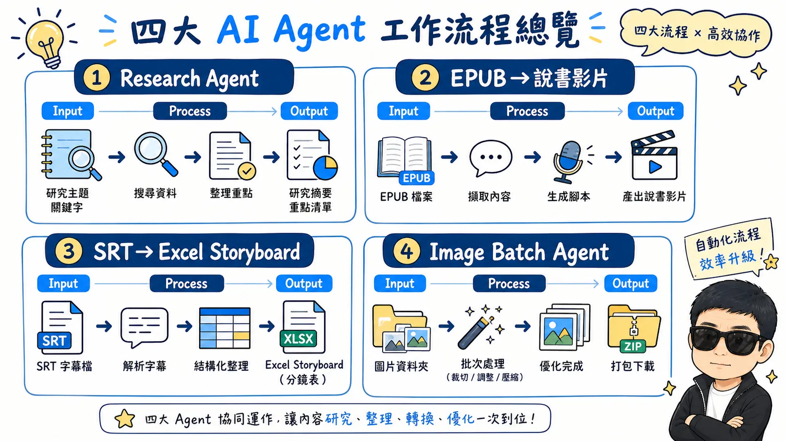
四大工作流：把閱讀立即落地
四大工作流
① Research Agent
② EPUB → 說書影片 Agent
③ SRT → Excel Storyboard Agent
④ Image Batch Agent
07｜12 週 AI 工作流學習計畫
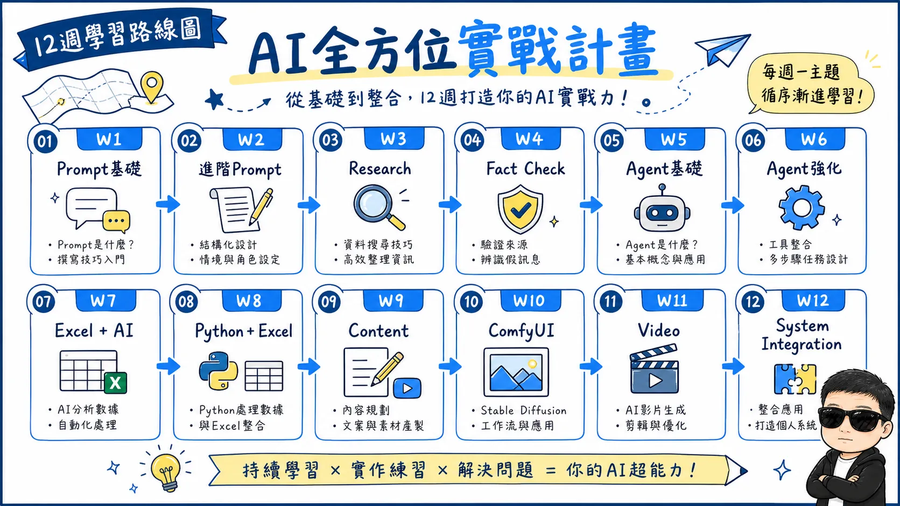
12 週路線：每兩週建立一層能力
12 週路線
| 週 | 主題 | 閱讀 | 實作 | 交付成果 | 驗收 |
|---|---|---|---|---|---|
| W1 | Prompt 基礎架構 | Prompt Anatomy | 拆解既有提示詞 | Prompt-Template.md | 可套 5 種任務 |
| W2 | 進階 Prompt | Advanced Prompt / Personal AI | 整理常用 Prompt | My-Prompt-Library.md | ≥20 個可直接使用 |
| W3 | AI Research | Research Ch.2–4 | 研究真實主題 | Research-Agent.md | 重要事實可追溯 |
| W4 | Fact Checking | Research Ch.5、7 | 衝突來源＋SOP | Research-Workflow.md | 能處理矛盾與未知 |
| W5 | Agent 基礎 | Agents Ch.2、4 | Goal→Tasks→Output | Research-Agent-v1.md | 完成多階段研究 |
| W6 | Agent 強化 | Agents Ch.7、8 | Testing/Retry/QC | Agent-Template.md | 失敗能重試 |
| W7 | Excel＋AI | Excel Ch.2–4 | AI＋Excel 分鏡 | Storyboard.xlsx | 時間碼欄位正確 |
| W8 | Python＋Excel | Excel Ch.12 | SRT→Python→Excel | srt_to_storyboard.py | 換 SRT 仍可執行 |
| W9 | AI Content | Content Ch.2、4、7 | EPUB→說書稿→TTS/SRT | Book-to-Script.md | 可換不同 EPUB |
| W10 | ComfyUI | Agent＋Prompt | Excel→API 批次產圖 | Image-Batch-Agent | 編號、續跑、重試 |
| W11 | Video Pipeline | 整合 | 圖＋MP3＋SRT→MP4 | Video-Pipeline | 字幕／無字幕雙版 |
| W12 | 系統整合 | 不增加新書 | EPUB→最終成品 | Book-to-Media v1.0 | 換書不必重寫系統 |
08｜W1–W4：Prompt 與 Research
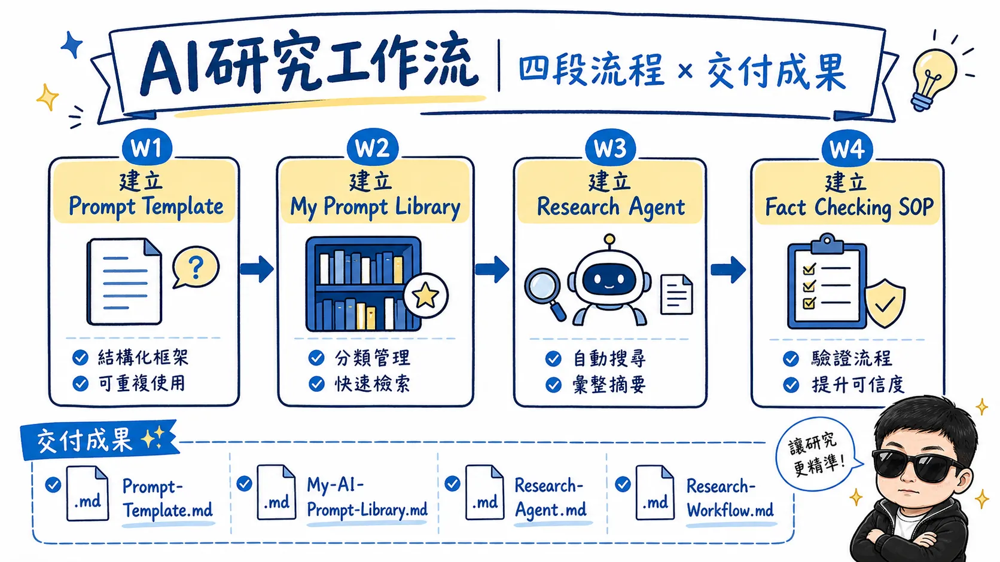
W1–W4：Prompt → Research
W1–W4 快速圖
W1–W2｜Prompt 模組化
固定七段式：角色任務 → 背景資訊 → 輸入資料 → 具體步驟 → 約束條件 → 輸出格式 → 驗收標準。
建立 My-AI-Prompt-Library.md，分類
BOOK、RESEARCH、SCRIPT、SRT、STORYBOARD、IMAGE、CODEX、COMFYUI、VIDEO、WEB。
W3–W4｜Research Workflow
W4 刻意使用互相矛盾的來源，驗證 Agent 能否區分「確定、有爭議、無法證實」。
09｜W5–W8：Agent、Excel、Python
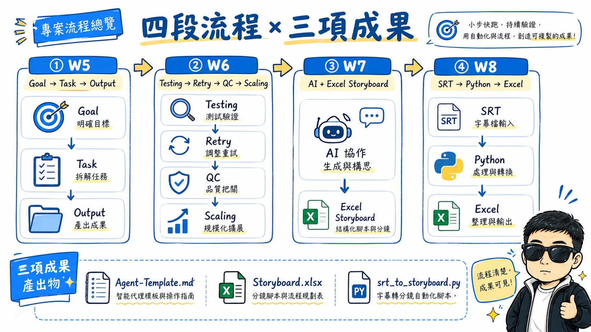
W5–W8：Agent → Excel → Python
W5–W8 快速圖
W5–W6｜從 Prompt 到 Agent
Prompt 是「幫我完成 X」；Agent 則是：理解 → 規劃 → 執行 → 檢查 → 修正 → 繼續 → 驗收 → Output。
核心工程概念：Testing、Error Handling、Retry、Logging、Quality Control、Scaling。
W7–W8｜SRT → Storyboard.xlsx
Input：narration.mp3、subtitle.srt、book.md
驗收：更換另一個 SRT，不修改 Python 主程式，仍可重新產生 Excel。
10｜W9–W12：內容、ComfyUI、影片與總整合
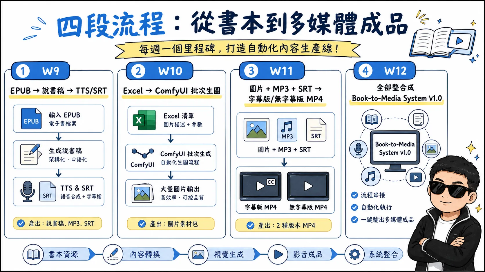
W9–W12：內容、圖片、影片到系統整合
W9–W12 快速圖
W9｜EPUB → 說書專案
QC：章節完整、避免虛構、適合 TTS、字幕與旁白一致。
W10｜ComfyUI Image Batch Agent
Storyboard.xlsx → 001–010 → ComfyUI API → 檢查檔名 → 失敗 Retry → 011–020……。支援中斷續跑與只重跑失敗項目。
W11｜Video Pipeline
輸入 cover.webp、圖片／影片、narration.mp3、subtitles.srt、BGM，使用 Codex / Python / FFmpeg 組合。
固定輸出：book-subtitle.mp4、book-clean.mp4、book-youtube.srt。
W12｜Book-to-Media System v1.0
本週不增加新工具。拿一本沒有參與開發的新 EPUB 做真正壓力測試。
11｜畢業作品：Book-to-Media System v1.0
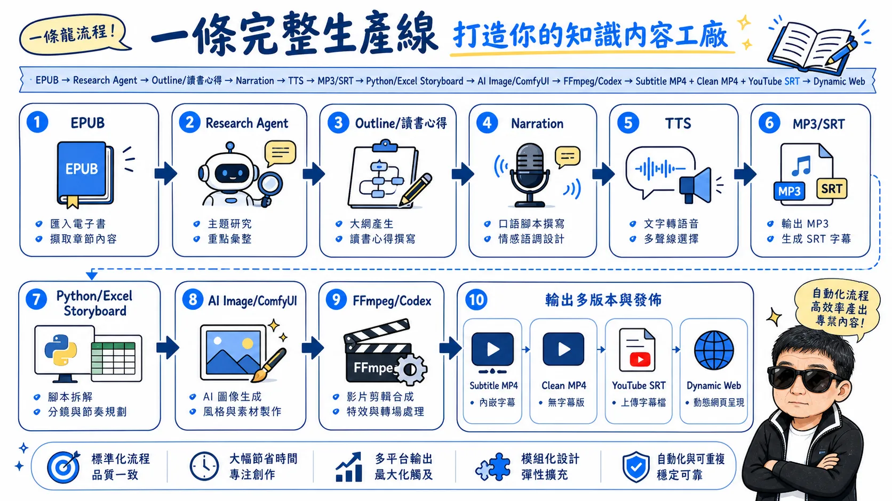
Book-to-Media System v1.0：一站式管線
最終系統一眼看懂
「今天換另一本 EPUB，需要重做整套程式嗎？」
如果答案是：不用，只需要更換 EPUB 與少量設定，系統才真正完成。
學習時間建議
每週約 6–8 小時：閱讀 2 小時＋跟書實驗 1–2 小時＋自己的專案實作 3–4 小時。重點是每週留下可重複使用的成果，而不是追求看完多少頁。
12｜整段對話的核心結論
最後留下的不是讀書筆記，而是自己的 AI 工作系統
核心結論
以前
很多分散的 AI 操作：Prompt、Codex、Excel、ComfyUI、字幕、分鏡、影片、網頁各自處理。
12 週後的目標
一套自己設計、自己理解、可以換資料重跑、可以持續修改的 AI 生產系統。
閱讀不是終點。每讀一個核心章節，就做一個小實驗；每做一個實驗，就留下可以重複使用的檔案。最後讓所有檔案變成同一條工作流。
這 11 本書的最佳角色
不是 11 個待完成的閱讀任務，而是 11 個零件庫。 Prompt 書提供模板；Research 書提供查證；Agent 書提供任務控制；Excel 書提供資料與 Python；Content 書提供內容生產。最後由您自己的專案把它們組裝起來。